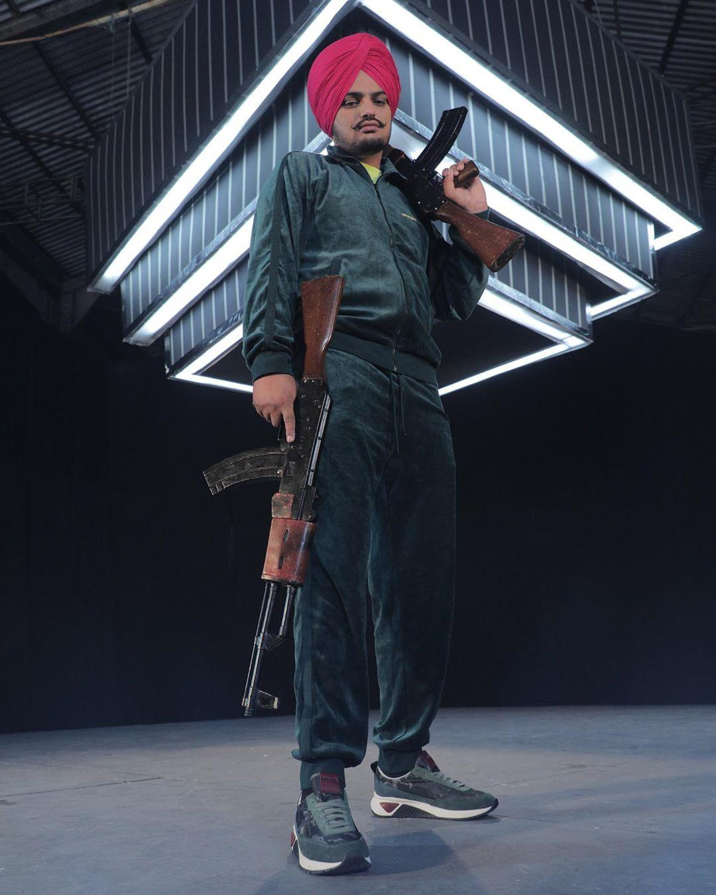

Life of SidhuMoosewala
Shubhdeep Singh Sidhu (11 June 1993 – 29 May 2022), known professionally as Sidhu Moose Wala,[6][7] was an Indian rapper, singer and songwriter. He worked predominantly in Punjabi-language music and cinema. He is generally regarded to have been one of the greatest Punjabi artists of his generation[8][9] and to many, amongst the greatest Punjabi artists of all time.[10][11][12][13] Moreover, he was considered a key figure in opening the door for Punjabi artists into mainstream music. In 2020, Sidhu was named by The Guardian among 50 up and coming artists.[14] He also became the first Punjabi and Indian singer to perform at Wireless Festival and won four awards at the Brit Asia TV Music Awards.[15] Sidhu rose to the mainstream with his track "So High". In 2018, he released his debut album PBX 1, which peaked at number 66 on the Billboard Canadian Albums chart. His singles "47" and "Mera Na" were ranked on the UK Singles Chart. Born in Moosa, Mansa district, Moose Wala started in 2016 as a songwriter for the song "License" by Ninja, and as lead artist in 2017 with Gurlez Akhtar for a duet song, "G Wagon". Following his debut, he collaborated with Brown Boyz for various tracks. His tracks peaked on the UK Asian Music chart. His song "Bambiha Bole" was among the top five on the Global YouTube music chart. In 2021, he released Moosetape, tracks from which charted globally including Billboard Global 200, Billboard Global Excl. US, Canadian Hot 100, UK Asian, and New Zealand Hot charts. He has the most number-one singles on the Billboard India Songs chart. In 2021, he joined the Indian National Congress political party and unsuccessfully contested the 2022 Punjab Legislative Assembly election from Mansa. Moose Wala was shot dead by unidentified assailants on 29 May 2022; a Canada-based gangster, active in Punjab, claimed responsibility for the killing, which the police said was a culmination of inter-gang rivalry.[16] On 23 June 2022, his first posthumous single, "SYL", was released.